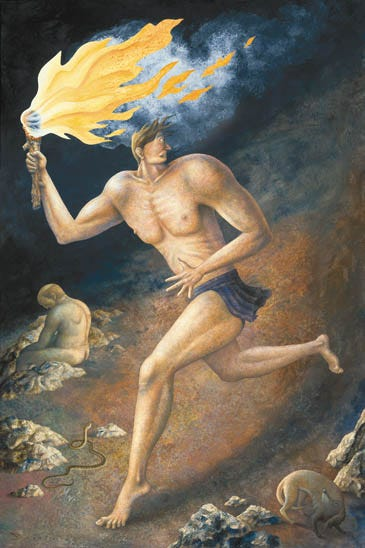
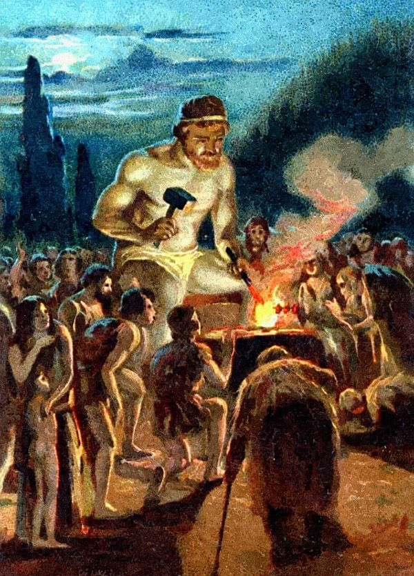

The Myth of Prometheus
Prometheus is a Titan who was a leader during the battle between the Titans and the Olympian gods. After the Titan’s defeat, he decided to switch sides and serve the gods. Known for his intelligence, he was tasked with the creation of humans, which he sculpted out of clay. The other gods created the rest of the creatures on Earth. Prometheus’ brother, Epimetheus, gave gifts to the creatures on Earth, such as fur, features, and gills, but didn’t have a gift for humans.

Prometheus, who was empathetic to humans, decided to steal fire from Mount Olympus and give it to them. The fire allowed humans to stay warm and the light allowed them to discover knowledge. Humanity flourished with the gift of fire, learning to cook, forge, and create culture and civilization. However, this act of theft angered Zeus who saw it as an act of defiance.

As punishment, Zeus had Prometheus bound to a rock on a remote mountain. Each day, an eagle would come and eat Prometheus' liver, which would then regenerate overnight, subjecting him to an eternity of torture. This punishment was intended not just for Prometheus stealing fire but also as a warning to others who might defy the gods.